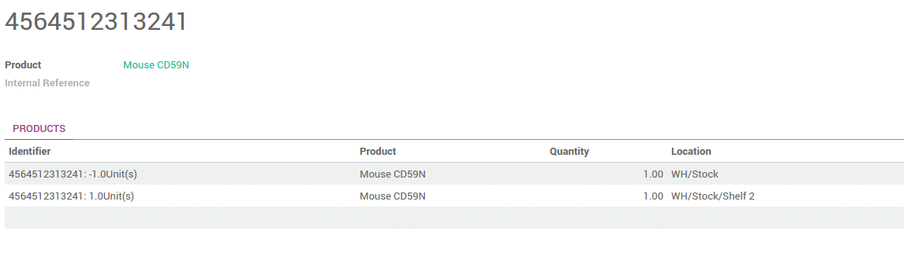

Introduction
Serial Number Tracking is used to track products with serial numbers on every transactions. You can track the current location of the product with serial numbers. When the products are moved from one location to another location, the system will automatically identify the current location of the product based on last movement of the product. So you can get the last location where the products are moved.
The double-entry management in Odoo enables you to run very advanced traceability.
Setting up
Application configuration
You need activate the tracking of serial numbers in the settings. In the Inventory application, go to , select Track lots or serial numbers.

Then click on Apply.
Product Configuration
Finally, you have to configure which products you want to track in lots.
Go into , and open the product of your choice. Click on Edit, and in the Inventory tab, select By Unique Serial Number, then click on Save.

Manage Serial Numbers
Transfers
In order to process a transfer of a product tracked by serial number, you have to input the number(s). In order to be able to assign serial numbers to products with tracking features enabled you will first need to mark your transfer as to do. Click on the Mark as TODO button to display the Lot Split icon.
Click on the serial number icon :

A window will pop-up. Click on Add an item and fill in the serial numbers.

If you move products that already have serial numbers assigned, those will appear in the list. Just click on the + icon to to confirm that you are moving those serial numbers.

Note
In the scanner interface, you just have to scan the serial numbers.
Inventory adjustment
Inventory of a product tracked by serial numbers can be done in 2 ways:
- Classic inventory by products
- Inventory of a serial number
When doing a classic inventory, there is a Serial Number column. If the product has already been assigned with a number, it is already pre-filled.
Click on Add an item if the product has not been inventoried yet. You can easily create serial numbers, just type in a new number in the column.

The quantity should be 1 for each line.
You can also just do the inventory of a serial number. In this case, you will have to fill in the serial number. You can also create a new one from here. Just type in the number, a window will pop out to link it to a product.

Serial Number traceability
The serial number given to these items allow you to keep track of where they were received, put in stock, to whom they were sold and where they were shipped to.
To track an item, open the Inventory module, and in , click on the serial number corresponding to your search.
You can have more details by clicking on the Traceability button :